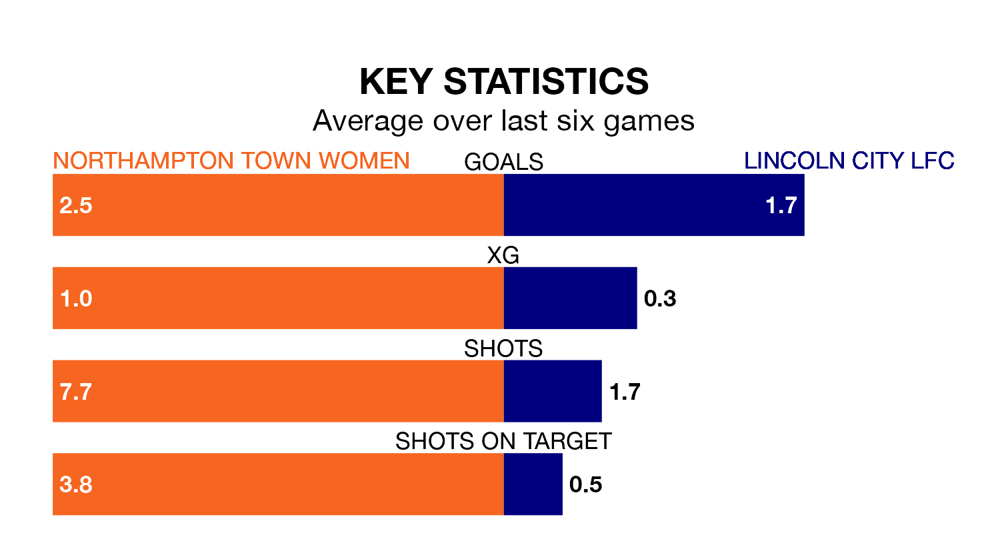

Sunday's early match between Northampton Town Women and Lincoln City LFC promises to be one for the neutrals, as two of Women's National League Division One Midlands's most free-scoring sides go head-to-head.
Ahead of the game, Northampton Town and Lincoln City sit joint-fourth in the goal-scoring charts, with 25 goals apiece.
Northampton Town are in reasonable form in Women's National League Division One Midlands, with four wins and two losses from their last six games.
With a win and three draws over that period, Lincoln City's form is much worse – they have taken six points from 18, compared to the hosts' 12.
In the last five years, Northampton Town and Lincoln City have played each other on four occasions. Northampton Town won one of them and Lincoln City the other.
On average, Northampton Town scored 1.2 goals and Lincoln City 2.8 in those matches.
Their last meeting was on September 10, when Lincoln City won 4-0 at home.
Northampton Town are fifth in the table after 12 games, of which they have won six and drawn one, earning 19 points.
The away side are three places behind Northampton Town in eighth, with three wins and four draws putting them on 13 points.
Northampton Town's last match was on January 14, a 1-0 loss against Loughborough Lightning Women.
Lincoln City drew 1-1 with Leek Town Women last time out, also on January 14.
Updated: 06:13 (UTC), 18/01/24